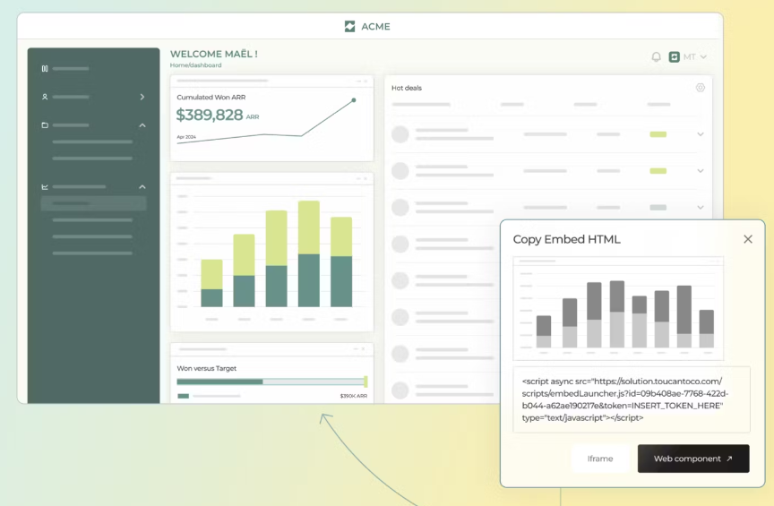

Toucan Toco – Datavisualisation (Projet MOA)

DataViz – Préfecture IDF
Mise en place d’un POC de datavisualisation avec Toucan Toco en contexte préfecture. Rôle MOA : cadrage des besoins, définition des KPI, coordination avec la MOE et conduite du changement.
- Catégorie : Data & Innovation publique
- Contexte : Préfecture IDF (2018–2019)
- Livrables : ateliers, mapping KPI, maquettes dashboards, démo CODIR
Contexte & objectifs
Les directions produisaient des reportings hétérogènes (Excel, exports outils). Objectif : unifier la lecture des indicateurs et proposer un dashboard commun aux décideurs via une solution légère et tournée utilisateurs.
- Choix d’un périmètre pilote (2–3 directions volontaires).
- Critères : lisibilité, rapidité de mise en œuvre, mobilité, narration.
- Choix de Toucan Toco pour son approche data storytelling.
Directions & KPI (exemples crédibles)
Ressources Humaines
- Taux d’absentéisme (mensuel par service)
- Délai moyen de recrutement (publication → prise de poste)
- Agents formés / total (par thématique)
Finances
- Exécution budgétaire (consommé vs voté)
- Respect des délais de paiement (factures dans les délais)
- Dépenses par poste (RH, fonctionnement, investissement)
Services aux Usagers
- Délai moyen de traitement (par type de demande)
- Taux de dossiers traités dans les délais
- Réclamations reçues / résolues
Sécurité & Prévention
- Opérations de contrôle (effectuées / prévues)
- Taux de conformité des établissements contrôlés
NB : indicateurs présentés à titre d’exemples plausibles, adaptés pour un POC sans données sensibles.
Démarche MOA & étapes projet
- Ateliers de cadrage (recueil besoins, priorisation KPI)
- Benchmark & choix outil (démos comparatives, arbitrage)
- Paramétrage POC (maquettes, navigation, filtres)
- Tests utilisateurs & ajustements de lisibilité
- Démo CODIR & préparation de l’essaimage
Livrables & tableaux de bord
- Cartographie des KPI par direction & définitions (glossaire).
- Maquettes de dashboards (tendances, top N, répartition).
- Navigation storytelling (pages synthèse → détail).
- Kit d’adoption : pas-à-pas utilisateur et note de présentation.
Résultats & adoption
- Reporting unifié : fin des consolidations manuelles.
- Lisibilité : lecture commune au CODIR, vision partagée.
- Acculturation data : logique KPI adoptée par les référents.
- Base pour essaimage vers d’autres directions/projets.
Gouvernance & sécurité (RGPD – niveau POC)
- Données non sensibles / agrégées pour le POC.
- Accès restreint aux référents métiers et à la direction.
- Traçabilité des définitions KPI (glossaire partagé).
Pour une mise en production : homologation sécurité, revue RGPD complète, gestion des habilitations & audit.
Limites & suites proposées
- Périmètre pilote volontairement restreint (preuve de valeur).
- Recommandation : industrialisation (gouvernance des données, alimentation automatique, SSO, REX trimestriel).